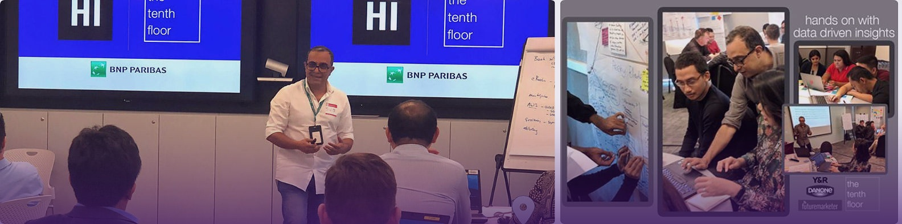
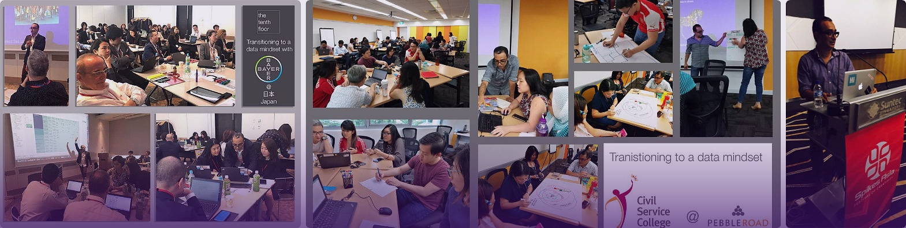

The People Doing the Work
Two senior leaders run every engagement, present from the first conversation to the final day. The sequence is familiar. The structure is different.
The same people, all the way through.
Most consulting engagements begin with senior partners and end with junior teams. The Tenth Floor is structured differently. Two senior leaders run every engagement. They are present in every meeting, every decision, every deliverable. The thinking does not change hands. The relationship does not change hands. The client works with the people doing the work, throughout.
The technical capability needed to execute the investigation is brought in from a small, vetted bench when the work requires it. That capability operates under the direction of the leadership team and reports through the leadership team. The client does not manage a vendor relationship beneath the engagement.


Twenty-five years in global marketing strategy. Former Managing Director of JWT Malaysia. Former Head of Integrated Strategy at McCann Singapore. Built and led strategy teams across four major networks before founding The Tenth Floor in 2015.
The decade of work that produced the Data Detective method was built under Subhendu’s direction. Every major disruption since 2015 has been a live engagement context, not a case study from a safer era.
Visiting lecturer at the University of Miami’s graduate marketing programme. Industry talks at Hyper Island, Google Squared, NTU Singapore.

Brand strategist with sustained experience across SEA and MENA markets. Career spanning Executive Creative Director, Head of Strategy, and analytical lead inside the investigative work.
Hasnah brings the analytical and strategic depth that translates evidence into decisions that hold under commercial pressure. Recognised internationally for work across banking, consumer goods, hospitality, and insurance.
Recognised at Cannes Lions, Clio, The One Show, New York Festivals, and Effie.
Fixed scope. Fixed fee. Everything transfers.
Every engagement is fixed scope and fixed fee. No dependency created by design. The engagement is built from the beginning so that it ends. Everything produced (the findings, the dashboards, the method, the measurement instrument) belongs to the client’s team from the moment the work concludes. We are here until you don’t need us, and that is deliberately how we build the work.
The most reliable test of a method is not its theoretical coherence. It is what happens when it is applied to real problems, in real conditions, with real commercial consequences on the other side. Across twelve engagements, four continents, and a decade of disruption, that test has been run consistently.


A direct conversation is the right starting point.
No pitch. No proposal. A meeting with the leadership team about the real question underneath the stated problem.
Consulting Advisors

28 years across marketing strategy and digital transformation: 17 in senior corporate roles at WPP, Publicis, and Interpublic; 11 as entrepreneur and educator. Founder & CEO of Maxential, which has trained 15,000+ executives at 80+ blue-chip organisations across 45 countries. Adjunct Faculty at Singapore Management University’s Lee Kong Chian School of Business MBA programme (Dean’s Honour List, 2018); also at Rutgers University and Duke Corporate Education. Active angel investor in Web3, analytics, and marketing technology.

35 years across commercial marketing, brand and demand generation (American Express, Visa, Mastercard, AWS, and PageGroup), leading marketing across 37 markets as Regional Head, APAC. A commercial thinker with a track record of impact on both the bottom line and the communities she operates in. Named a Top 50 CMO and one of Asia’s Top 50 most influential leaders in media, and chosen as Chief Judge for APPIES 2018 and IAA B2B APAC Advisory Board member. Deborah has won 21 industry awards recognising excellence in advertising, marketing, media, and communications, including the Institute of Advertising’s APPIES Awards, a Silver Stevies Business Award, and Smarties Best in Asia for social and mobile marketing.